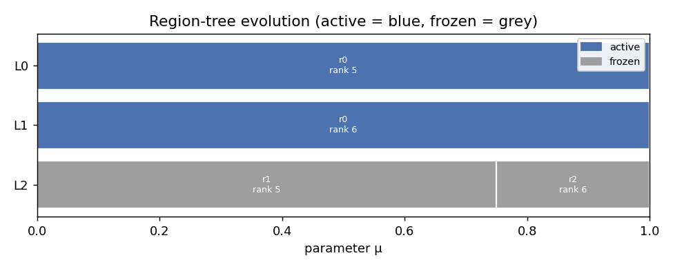
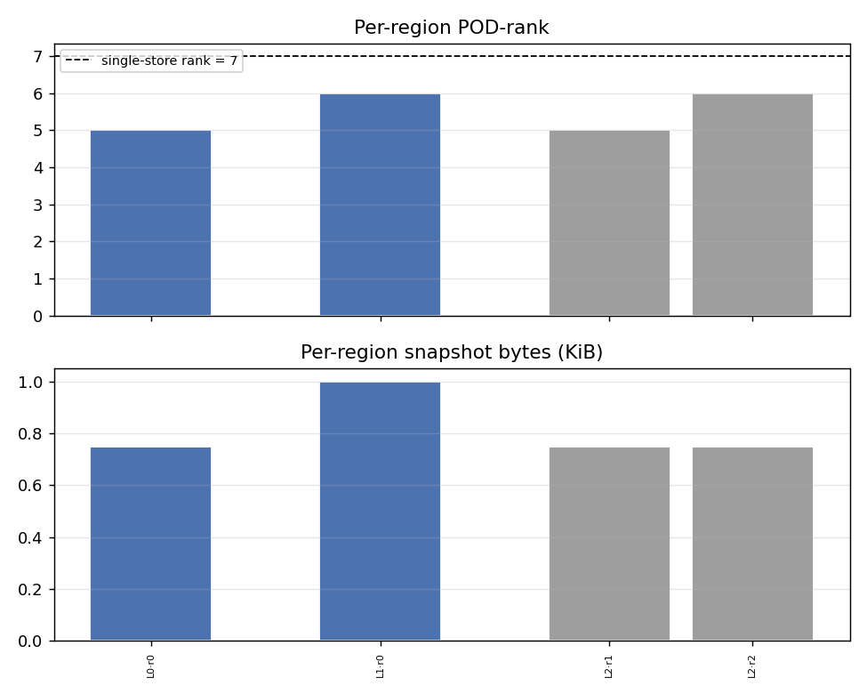
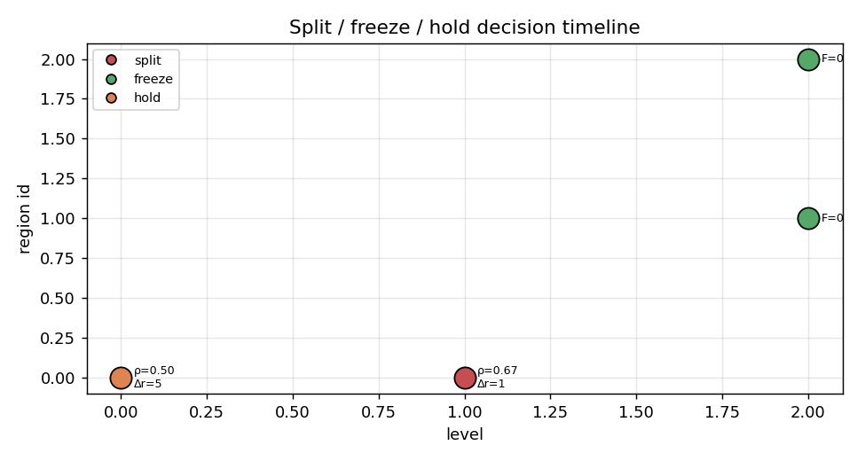
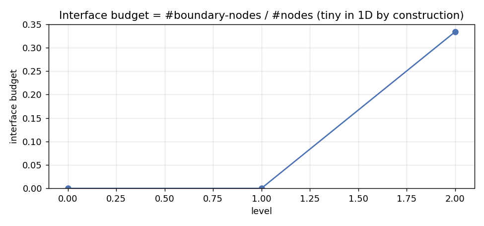
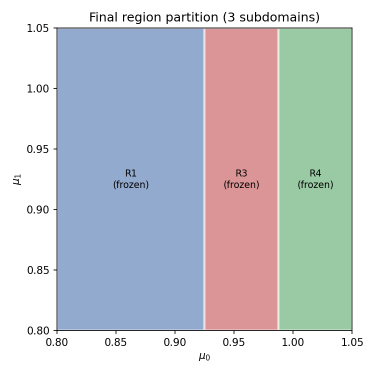

Dynamic domain decomposition
An adaptive-greedy eigensurface scan stores eigenvectors at every grid node it visits. As the grid grows, those snapshots pile into a single global reduced basis — a basis that has to span all the behaviour it has seen so far. When the eigensurface is only piecewise low-rank (the typical case: a smooth background rank plus a concentrated burst wherever eigenvalue curves approach one another), the global basis pays for all the bursts at once. Its rank equals roughly the sum of per-regime ranks, not the maximum.
Parameter-domain decomposition fixes this by splitting the parameter box dynamically into regions, each with its own snapshot store. A region that has certified convergence stops accumulating snapshots; only the still-active regions keep refining. The target: peak per-region rank ≈ max over regimes, not sum.
There are two payoffs:
- Leaner storage. Each region’s POD basis needs to capture only its local behaviour. Regions that freeze early keep a small, fixed-rank basis while the rest of the box refines.
- Parallel speedup. Once two regions are independent — no shared flagged edges — their midpoint eigensolves can run simultaneously on separate processes. The critical-path length is the busiest region’s work, not the total work.
This page demonstrates both effects concretely, first on a synthetic 1D two-regime problem, then on the canonical §3.3.3 2D diffusion benchmark. For the full design rationale and the algorithmic contract, see parameter-domain-decomposition.md.
The split/freeze/hold criterion
At the end of each refinement level, every active region receives one of three decisions — a deterministic, pure function of the public grid state:
| Decision | Condition |
|---|---|
| FREEZE | F = 0: no flagged interior edges — the region is certified, exits the traversal permanently |
| SPLIT | \rho \ge \rho_{\min} and F \ge f_{\min} and \Delta r > 0 and age \ge cooldown and an interior cut node exists |
| HOLD | everything else — keep refining in place |
where \rho = F/E is the refinement density (flagged edges over interior edges) and \Delta r is the local POD rank growth since the previous level. Density is the primary discriminator: a region splits when a large fraction of its interior is still flagged and its basis is still growing. A low-density region that happens to have a few flagged edges holds rather than cuts prematurely.
The cut is placed at the existing graph node nearest the flagged-edge centroid along the busiest parameter axis. No new eigensolve is needed at split time.
1D demonstration — synthetic two-regime problem
Setup
A synthetic 1D eigenproblem designed so the two halves of [0, 1] behave differently by construction:
- Left half (\mu \le 0.5): low-rank — eigenvectors are fixed basis vectors, so the a-posteriori verdict certifies immediately and the region freezes.
- Right half (\mu > 0.5): refinement-heavy — a partial rotation makes the verdict flag; one band tilts into a \mu-dependent complementary direction, so the local basis rank climbs as the region refines.
Level-by-level decomposition
| Level | nodes (+new) | flagged edges | regions | interface budget |
|---|---|---|---|---|
| L0 | 3 (+3) | 1 | R0 [0, 1] active |
0.00 |
| L1 | 4 (+1) | 2 | R0 [0, 1] active |
0.00 |
| L2 | 6 (+2) | 0 | R1 [0, 0.75] frozen + R2 [0.75, 1] frozen |
0.33 |
The interface budget jumps from 0 to 1/3 once the split creates the shared boundary node at \mu = 0.75. In 1D a boundary is a single point, so this stays small by construction.
Region-tree evolution

Per-region memory and POD-rank

peak_subdomain_count 2
max_region_pod_rank 6 ← max over both regions
single_store_rank 7 ← what a global basis would need
rank_reduction 1Per region, level by level:
| Level | region | status | POD-rank | snapshots |
|---|---|---|---|---|
| L0 | R0 [0, 1] |
active | 5 | 3 |
| L1 | R0 [0, 1] |
active | 6 | 4 |
| L2 | R1 [0, 0.75] |
frozen | 5 | 3 |
| L2 | R2 [0.75, 1] |
frozen | 6 | 3 |
R2 carries the rank-6 regime; R1 stays at 5. The max-over-regions is 6, one below the single-store rank 7. Small numbers, but they can be checked by hand — each region’s basis reflects only its local behaviour.
Split/freeze/hold decision timeline

| Level | region | action | \rho | flagged/edges | \Delta r | cut |
|---|---|---|---|---|---|---|
| L0 | R0 | HOLD | 0.50 | 1/2 | +5 | — |
| L1 | R0 | SPLIT | 0.67 | 2/3 | +1 | axis 0 @ \mu = 0.75 |
| L2 | R1 | FREEZE | 0.00 | 0/2 | — | — |
| L2 | R2 | FREEZE | 0.00 | 0/2 | — | — |
L0 holds: density 0.5 is below the split threshold, so the region keeps refining in place. L1 splits: density climbs to 0.67 and rank is still growing (\Delta r = 1), so it cuts at the existing interior node nearest the flagged-edge centroid. L2 both children have F = 0 — fully certified — and freeze permanently.
Interface cost

Parallel speedup — 1D
With two independent regions, the midpoint eigensolves within each region can run on separate worker processes. The per-level speedup model is S_\ell = \Sigma_r w_{r,\ell} / \max_r w_{r,\ell} (total work over critical path). Over the whole run:
projected speedup 1.20× (eigensolve-count model)
measured speedup 1.58× (wall-clock, actual parallel run)Measured speedup exceeds projected here because the 1D problem’s eigensolves are so small that forking overhead matters less — the two workers genuinely overlap their work.
2D demonstration — §3.3.3 diffusion
Setup
The §3.3.3 two-parameter diffusion problem: -\nabla \cdot (c(\mu) \nabla u) = \lambda u on [0,1]^2 with tensor coefficient c(\mu) = \bigl[\begin{smallmatrix}\mu_0^{-2} & 1 \\ 1 & \mu_1^{-2}\end{smallmatrix}\bigr], parameter box \Omega = [0.8, 1.05]^2, n_{\rm eigs} = 8.
The 2-D benchmark carries a true crossing of bands 3–4 near \mu \approx (0.973, 0.973) on the symmetry diagonal, and a small-gap pair at bands 4–7 in the right half of the box. Refinement concentrates near the crossing, creating a naturally two-regime structure suitable for decomposition.
Final partition

The algorithm makes two cuts, both along \mu_0: flagged edges are concentrated where \mu_0 is large (near the crossing), so the busiest axis is \mu_0 at both decision points.
Level-by-level decisions (mesh_n=15, n_dof ≈ 900)
| Level | region | status | action | \rho | flagged/edges | \Delta r | cut |
|---|---|---|---|---|---|---|---|
| L0 | R0 [0.80, 0.80]–[1.05, 1.05] |
active | SPLIT | 0.25 | 3/12 | +31 | axis 0 @ \mu_0 = 0.925 |
| L1 | R1 [0.80, 0.80]–[0.925, 1.05] |
→ frozen | FREEZE | 0.00 | 0/2 | — | — |
| L1 | R2 [0.925, 0.80]–[1.05, 1.05] |
active | SPLIT | 0.10 | 1/10 | +29 | axis 0 @ \mu_0 = 0.9875 |
| L2 | R3 [0.925, 0.80]–[0.9875, 1.05] |
→ frozen | FREEZE | 0.00 | 0/2 | — | — |
| L2 | R4 [0.9875, 0.80]–[1.05, 1.05] |
→ frozen | FREEZE | 0.00 | 0/6 | — | — |
Reading the sequence: the box splits off its left third at L0 (relatively clean region, certifies immediately at L1), then the right portion splits again at L1 (zooming toward the crossing), and both sub-regions certify at L2.
Rank reduction (mesh_n=15)
Per-region POD-rank at termination:
| region | bounds (\mu_0) | status | POD-rank | snapshots |
|---|---|---|---|---|
| R1 | [0.80, 0.925] | frozen | 18 | 3 |
| R3 | [0.925, 0.9875] | frozen | 19 | 3 |
| R4 | [0.9875, 1.05] | frozen | 23 | 7 |
peak_subdomain_count 3
max_region_pod_rank 23 ← worst region (near the crossing)
single_store_rank 31 ← what a single global basis needs
rank_reduction 8 ← 26% savingsR4 (containing the crossing at \mu_0 \approx 0.973) carries the highest rank. R1 and R3 (cleaner regions) are leaner. A global basis would pool all 13 snapshots into one store and reach rank 31.
Parallel speedup — the two-regime story
The decomposition structure (which regions form, where the cuts land, rank savings) is the same regardless of mesh resolution. The parallel payoff depends on problem size:
| mesh_n=15 (n_dof ≈ 900) | mesh_n=64 (n_dof ≈ 16k) | |
|---|---|---|
| peak subdomains | 3 | 4 |
| max region POD-rank | 23 | 22 |
| single-store rank | 31 | 31 |
| rank reduction | 8 (26%) | 9 (29%) |
| projected speedup | 1.09× | 1.14× |
| measured speedup | ≈1.00× (overhead-bound) | 1.21× (win regime) |
At mesh_n=15, each eigensolve takes only a few milliseconds — faster than the process-fork overhead needed to distribute work across cores. The measured speedup is ≈1.00×. At mesh_n=64 (n_dof ≈ 16k), eigensolves are the dominant cost; process-fork overhead amortises and the measured speedup reaches 1.21×.
The crossover is measured at approximately n_dof ≈ 5k (DIR-055C, see parallel-execution.md for the three-regime story). The §3.3.3 problem at mesh_n=64 sits clearly in the win regime: the projected model (1.14×) and the measured wall-clock (1.21×) are in close agreement.
Scope
Works at any d_param:
- The refinement loop decomposition (split/freeze/hold decisions, per-region snapshot stores, region stats in the run report)
- Parallel eigensolve execution within and across regions
- All run-report telemetry (
region_summary, per-levelregions+region_decisions,interface_budget_series)
Certified ROM accuracy over the decomposed store (Tier 3). The last deferred capability closed: evaluate_rom now works over a decomposed store at every d_{\mathrm{param}}. The nearest-k basis pool may straddle region boundaries — that is sound because the joint M(\mu)-orthonormalisation consumes only the span of the stacked snapshot blocks, which is invariant to each region POD’s internal gauge; reads go through the resolver (boundary copies at full fidelity), and pool-exhaustion deficiency falls back to a rank-revealing Gram eigendecomposition. Certified on live decomposed runs with forced eviction (per-region cold PODs exercised, not just raw active blocks):
- 2D §3.3.3 bed (4 region leaves): eigenvalue rel-err ≤ 1.3e-8, subspace angle ≤ 4.2e-5 rad — far inside the pinned §3.3.3 ceilings (2.5e-4 / 0.015 rad); delta vs the single-store ROM ≤ 7.5e-5.
- 6D bed (the ROM-ceiling bed, 10 leaves, forced eviction): rel-err ≤ 1.8e-5 vs the 2e-3 ceiling, angle ≤ 2.0e-3 rad vs 3e-2; delta vs single-store ≤ 1.1e-4.
So the decomposition’s rank savings do not cost measurable surrogate accuracy: the decomposed ROM answers queries as accurately as the single-store one, with the delta between them measured, not assumed. Measured at 6D (DIR-113, faithful operator). The high-dimensional rendered view is no longer deferred: the §4.4 6D campaign page shows the decomposition on the real dissertation problem at n_dof = 1846 on the DIR-112-corrected operator — 5 splits, 4 freezes, peak 6 subdomains, single-store POD rank 35 vs max per-region 22 (−37 %), and a refinement trajectory identical to serial with verdicts byte-identical. Two honest faithful caveats replace the pre-fix headline: the interface budget climbs to 0.31 by L4 (not ≤0.1 — the sparse 32-node grid puts more nodes on boundaries), and the parallel pool goes overhead-bound (raw wall 0.70×) — at the true ~10-mode window solves cost milliseconds, so the 14 workers lose to serial. The pre-fix DIR-110 numbers (rank 1311→862, budget ≤0.096, 2.43×) were driven by the fake ~380-mode window’s heavy solves.